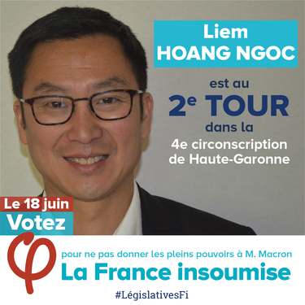

| Département | Circo | Nom | % 1T | Visuels |
|---|---|---|---|---|
| 4 - ALPES DE HAUTE PROVENCE | 2 | Léo WALTER (FI) | 16.55% |


|
Christophe CASTANER (LREM) Actuel ministre. RISQUE CUMUL MANDAT. (Maire de Forcalquier) (source) |
44.04% | |||
| 9 - ARIEGE | 1 | Bénédicte TAURINE (FI) | 20.26% |


|
Jérôme AZEMA (REM) Dirige une société d'édition musicale (source) |
31.35% | |||
| 9 - ARIEGE | 2 | Michel LARIVE (FI) | 18.83% |

|
Huguette BERTRAND-VINZERICH (REM ) Retraitée du Crédit Agricole. Elle faisait notamment partie du comité local de soutien à Ségolène Royal en 2007 (source) |
25,72 | |||
| 13 - BOUCHES DU RHONE | 4 | Jean-Luc MELENCHON (FI) | 34.31% |

|
Corinne VERSINI (REM) PDG de Genes'ink, ex KPMG. Ex-membre de l'UPE13 (source) |
22.66% | |||
| 13 - BOUCHES DU RHONE | 5 | Hendrik DAVI (FI) | 18.98% |


|
Cathy RACON-BOUZON (REM) Directrice de la communication chez Kaporal (source) |
29.00% | |||
| 16 - CHARENTE | 1 | Martine BOUTIN (FI) | 13.30% | |
Thomas MESNIER (REM) Médecin urgentiste de profession (source) |
38.00% | |||
| 24 - DORDOGNE | 1 | Hélène REYS (FI) | 17,89 |

|
Philippe CHASSAING (REM) Directeur de la mutuelle MGEN de Dordogne. (source) |
34,59 | |||
| 24 - DORDOGNE | 4 | Émilie CHALARD (FI) | 13.21% |

|
Jacqueline DUBOIS (REM) Formatrice, enseignante spécialisée. (source) |
30.92% | |||
| 29 - FINISTERE | 2 | Pierre-Yves CADALEN (FI) | 15,10% |

|
Jean-Charles LARSONNEUR (REM) Chargé de relations internationales au ministère des Affaires étrangères. (source) |
39.99% | |||
| 31 - HAUTE GARONNE | 1 | Claire DUJARDIN (FI) | 18,34% |

|
Pierre CABARE (REM) Condamné à une peine d'inéligibilité. EM avait soi-disant suspendu son investiture ... preuve que non. (source) |
33,70 | |||
| 31 - HAUTE GARONNE | 2 | Anne STAMBACH-TERRENOIR (FI) | 15.45% |


|
Jean-Luc LAGLEIZE (MDM) RISQUE ELU CUMUL MANDATS. (Adjoint au maire de Toulouse) (source) |
37.61% | |||
| 31 - HAUTE GARONNE | 4 | Liem HOANG NGOC (FI) | 21.02% |


|
Mickaël NOGAL (REM) Ancien collaborateur du député PS Christophe Borgel. (source) |
36,07% | |||
| 31 - HAUTE GARONNE | 6 | Patrick JIMENA (FI) | 15.83% |

|
Monique IBORRA (REM) Député PS sortante investie par LREM (source) |
39.54% | |||
| 31 - HAUTE GARONNE | 9 | Manuel BOMPARD (FI) | 18.91% | |
Sandrine MÖRCH (REM) Conseillère municipale à Fenouillet et à Roquette. Journaliste et réalisatrice. (source) |
36.96% | |||
| 31 - HAUTE GARONNE | 10 | Monique FABRE (FI) | 13.89% | |
Sébastien NADOT (REM) Professeur, candidat à l'élection présidentielle du Mvt de Robert Hue. (source) |
39.31% | |||
| 33 - GIRONDE | 3 | Loïc PRUD'HOMME (FI) | 19,02% |

|
Marik FETOUH (REM) RISQUE ELU CUMUL MANDATS.(Adjoint au maire de Bordeaux. Conseiller à Bordeaux Métropole). (source) |
33.43% | |||
| 33 - GIRONDE | 12 | Christophe MIQUEU (FI) | 16.39% |

|
Christelle DUBOS (REM) Fonctionnaire territoriale. Adjointe au maire de Sadirac. (source) |
37.44% | |||
| 34 - HERAULT | 2 | Muriel RESSIGUIER (FI) | 22.81% | |
Stéphanie JANNIN (REM) Accusée prise illégale d'intérêts/CUMUL(2ème adjoint au maire de Montpellier, vice-présidente de la Métropole). (source) |
28.58% | |||
| 34 - HERAULT | 3 | Stéphane VIDAL (FI) | 14,68% |


|
Coralie DUBOST (REM) Responsable de Projets Transversaux chez Montpellier Business School (source) |
37.17% | |||
| 35 - ILLE ET VILAINE | 4 | Marc MARTIN (FI) | 13.66% | |
Gaël LE BOHEC (REM) Dirige société Optilog Santé. (source) |
42.02% | |||
| 35 - ILLE ET VILAINE | 8 | Enora LE PAPE (FI) | 14,14% |

|
Florian BACHELIER (REM) Avocat. (source) |
40.94% | |||
| 38 - ISERE | 3 | Raphaël BRIOT (FI) | 14.71% |


|
Emilie CHALAS (REM) Directrice générale de la commune de Moirans. (source) |
36.18% | |||
| 40 - LANDES | 2 | Caroline DACHARRY (FI) | 11.77% |

|
Lionel CAUSSE (REM) RISQUE ELU CUMUL MANDATS. (Maire de Saint-Martin-de-Seignanx) (source) |
42.96% | |||
| 42 - LOIRE | 2 | Andrée TAURINYA (FI) | 38.75% |

|
Jean-Michel MIS (REM) |
15.38% | |||
| 44 - LOIRE ATLANTIQUE | 2 | Carole MALARD (FI) | 15.83% |


|
Valérie OPPELT (REM) |
39.78% | |||
| 44 - LOIRE ATLANTIQUE | 3 | Martine GOURDON (FI) | 16.73% |


|
Anne-France BRUNET (REM) |
38.65% | |||
| 44 - LOIRE ATLANTIQUE | 4 | Vincent EGRON (FI) | 17.38% |


|
Aude AMADOU (REM) |
39.20% | |||
| 44 - LOIRE ATLANTIQUE | 8 | Lionel DEBRAYE (FI) | 15.98% |


|
Audrey DUFEU SCHUBERT (REM) |
38.44% | |||
| 54 - MEURTHE ET MOSELLE | 3 | Patrice ZOLFO (FI) | 15.91% |

|
Xavier PALUSZKIEWICZ (REM) |
32.23% | |||
| 54 - MEURTHE ET MOSELLE | 6 | Caroline FIAT (FI) | 15.94% |

|
Cédric MARSOLLE (FN) |
15.94% | |||
| 56 - MORBIHAN | 3 | Marie-Madeleine DORE LUCAS (FI) | 11.84% | |
Nicole LE PEIH (REM) RISQUE ELU CUMUL MANDATS (Elue municipale et communautaire à Baud. Conseillère rég et élue à la Chambre d’agriculture. Agricultrice et chef d'entreprise) (source) |
41.30% | |||
| 56 - MORBIHAN | 5 | Alexandre SCHEUER (FI) | 12.18% | |
Gwendal ROUILLARD (REM) |
42.70% | |||
| 59 - NORD | 1 | Adrien QUATENNENS (FI) | 19.38% | |
Christophe ITIER (REM) |
32.61% | |||
| 59 - NORD | 2 | Ugo BERNALICIS (FI) | 19.16% |


|
Houmria BERRADA (REM) Condamnée pour faux et usage de faux. (source) |
22.53% | |||
| 63 - PUY DE DOME | 1 | Alain LAFFONT (FI) | 15.58% |

|
Valérie THOMAS (REM) |
40.56% | |||
| 65 - HAUTES PYRENEES | 1 | Sylvie FERRER (FI) | 15.45% |

|
Jean-Bernard SEMPASTOUS (REM) RISQUE SI ELU CUMUL MANDATS. (Maire divers droite de Bagnères de Bigorre (commune famille Macron) (source) |
43.15% | |||
| 69 - RHONE | 1 | Elliott AUBIN (FI) | 13.75% | |
Thomas RUDIGOZ (REM) |
46.88% | |||
| 69 - RHONE | 3 | Pascal LE BRUN (FI) | 15.88% |

|
Jean-Louis TOURAINE (REM) RISQUE SI ELU CUMUL MANDATS. (Elu depuis 1989) (source) |
42.84% | |||
| 75 - PARIS | 6 | Danielle SIMONNET (FI) | 18.83% |

|
Pierre PERSON (REM) |
39.42% | |||
| 75 - PARIS | 9 | Raphaël QNOUCH (FI) | 15.17% |

|
Buon TAN (REM) Visé par une plainte pour détournements de fonds (source) |
36.43% | |||
| 75 - PARIS | 10 | Leila CHAIBI (FI) | 14.62% |

|
Anne-Christine LANG (REM) |
42.38% | |||
| 75 - PARIS | 15 | Mehdi KEMOUNE (FI) | 18.66% |

|
George PAU-LANGEVIN (SOC) |
24.13% | |||
| 75 - PARIS | 16 | Sarah LEGRAIN (FI) | 20.84% | |
Mounir MAHJOUBI (REM) |
38.08% | |||
| 75 - PARIS | 17 | Daniele OBONO (FI) | 17.00% |

|
Béatrice FAILLÉS (REM) |
30.99% | |||
| 76 - SEINE MARITIME | 6 | Sébastien JUMEL (COM) | 22.82% | |
Philippe DUFOUR (REM) RISQUE SI ELU CUMUL MANDATS. (Maire du Bourg Dun) (source) |
26.87% | |||
| 77 - SEINE ET MARNE | 10 | Maxime LAISNEY (FI) | 15.02% |


|
Stéphanie DO (REM) |
38.12% | |||
| 79 - DEUX SEVRES | 1 | Nathalie SEGUIN (FI) | 15.85% |

|
Guillaume CHICHE (REM) |
40.59% | |||
| 80 - SOMME | 1 | François RUFFIN (FI) | 24.32% |


|
Nicolas DUMONT (REM) RISQUE SI ELU CUMUL MANDATS. (Maire d'Abbeville). (source) |
34.13% | |||
| 80 - SOMME | 2 | Cédric MAISSE (FI) | 14.33% |

|
Barbara POMPILI (REM) |
40.70% | |||
| 86 - VIENNE | 1 | Céline CUVILLIER (FI) | 15.12% |

|
Jacques SAVATIER (REM) |
42.29% | |||
| 87 - HAUTE VIENNE | 3 | Danielle SOURY () | 15.76% | |
Sophie BEAUDOUIN-HUBIERE (REM) |
36.52% | |||
| 91 - ESSONNE | 1 | Farida AMRANI (FI) | 17.61% |

|
Manuel VALLS (DVG) |
25.45% | |||
| 91 - ESSONNE | 3 | Virginie ARAUJO (FI) | 13.74% |

|
Laëtitia ROMEIRO DIAS (REM) |
35.00% | |||
| 91 - ESSONNE | 10 | Charlotte GIRARD (FI) | 15.55% |

|
Pierre-Alain RAPHAN (REM) |
26.68% | |||
| 92 - HAUT DE SEINE | 11 | Yasmine BOUDJENAH (FI) | 22.01% | |
Laurianne ROSSI (REM) |
38.43% | |||
| 93 - SEINE SAINT DENIS | 1 | Eric COQUEREL (FI) | 19.02% |


|
Sébastien MÉNARD (REM) |
31.89% | |||
| 93 - SEINE SAINT DENIS | 2 | Stéphane PEU (FI) | 27.69% |

|
Mme Véronique AVRIL (REM) Accusée d’avoir mis en location un appartement dans un immeuble insalubre durant cinq ans, à « un tarif exorbitant » (source) |
20.69% | |||
| 93 - SEINE SAINT DENIS | 3 | Dominique DELAUNAY (FI) | 14.98% |

|
Patrice ANATO (REM) |
39.68% | |||
| 93 - SEINE SAINT DENIS | 4 | Marie-Georges BUFFET (COM) | 32.80% |

|
Prisca THEVENOT (REM) |
25.20% | |||
| 93 - SEINE SAINT DENIS | 6 | Bastien LACHAUD (FI) | 19.35% |

|
Alexandre AÏDARA (REM) |
27.32% | |||
| 93 - SEINE SAINT DENIS | 7 | Alexis CORBIERE (FI) | 21.60% |


|
Halima MENHOUDJ (REM) RISQUE SI ELU CUMUL MANDAT(Maire adjointe à Montreuil, assistante partlementaire) (source) |
24.70% | |||
| 93 - SEINE SAINT DENIS | 9 | Sabine RUBIN (FI) | 19.01% |

|
Jeanne DROMARD (REM) |
31.18% | |||
| 93 - SEINE SAINT DENIS | 11 | Clémentine AUTAIN (FI) | 37.21% |

|
Elsa WANLIN (REM) RISQUE SI ELU CUMUL MANDAT. (Adjointe au maire de Sevran) (source) |
28.28% | |||
| 94 - VAL DE MARNE | 1 | Djamel ARROUCHE (FI) | 16.37% | |
Albane GAILLOT (REM) |
33.62% | |||
| 94 - VAL DE MARNE | 2 | François COCQ (FI) | 18.62% |


|
Jean François MBAYE (REM) |
33.67% | |||
| 94 - VAL DE MARNE | 10 | Mathilde PANOT (FI) | 16.05% |

|
Sheerazed BOULKROUN (REM) |
30.62% | |||
| 95 - VAL D'OISE | 10 | Katia NOIN LEDANOIS (FI) | 14.42% |

|
Aurelien TACHE (REM) |
36.72% | |||
| 99 - ETRANGER | 2 | Sergio CORONADO (FI) | 23.61% |

|
Paula FORTEZA (REM) |
42.74% | |||
| 99 - ETRANGER | 4 | Sophie RAUSZER (FI) | 10.95% | |
Pieyre-Alexandre ANGLADE (REM) |
52.27% | |||
| 99 - ETRANGER | 5 | François RALLE-ANDREOLI (FI/EELV) | 15.52% |

|
Samantha CAZEBONNE (REM) |
50.36% | |||
| 974 - LA REUNION | 2 | Huguette BELLO (DVG) | 57.08% | |
Cyrille MELCHIOR (LR) |
20.37% |